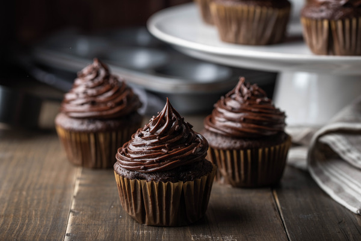

How to bake chocolate cupcakes!

Cupcakes are about having your own little cake that you do not have to share. These Chocolate Cupcakes are my favorite type of cupcake. The combination of a rich and moist chocolate butter cake topped with a rich and creamy chocolate butter frosting is irresistible. The frosting can be either piped into lovely swirls or, for the kids, all you need is a quick swipe of frosting with a liberal dusting of colored sprinkles. From Joy of Baking.
What you'll need:
- All-purpose flour
- Cocoa powder
- Sugar, baking soda, and salt
- Brewed coffee
- White distilled vinegar
- Vegetable oil, egg, and vanilla extract
Instructions
- Preheat your oven to 350 ° F (180 ° C). Lightly butter, or line 12 muffin cups with paper liners.
- In a small bowl, stir the unsweetened cocoa powder with the boiling hot water (or hot coffee) until smooth. Let cool to room temperature.
- In another bowl, whisk or sift the flour with the baking powder, baking soda, and salt.
- Then in the bowl of your electric stand mixer, fitted with the paddle attachment (or with a hand mixer), beat the butter until smooth. Add the sugar and vanilla extract and beat, on medium high speed, until light and fluffy. Add the eggs, one at a time, beating until fully incorporated. Scrape down the sides and bottom of the bowl as needed. Add the flour mixture (in three additions) alternately with the cocoa mixture (in two additions), beginning and ending with the flour mixture. Beat only until the ingredients are incorporated.
- Fill each muffin cup about ¾ full with batter and bake for about 18 - 20 minutes or until risen, springy to the touch, and a toothpick inserted into a cupcake comes out clean. (Do not over bake or the cupcakes will be dry.) Remove from oven and place on a wire rack to cool. Once the cupcakes have completely cooled, cover with the Chocolate Frosting. You can either spread the frosting on the cupcakes with a small spatula or if piping, I like to use a large Wilton 1M open star tip to make lovely swirls.
- Melt the chocolate in a heatproof bowl (I like to use stainless steel) placed over a saucepan of simmering water. Remove from heat and let cool to room temperature.
- In the bowl of your electric stand mixer, fitted with the paddle attachment (or with a hand mixer), beat the butter until smooth and creamy (about 1 minute). Add the sugar and vanilla extract and beat until it is light and fluffy (about 2 minutes). Scrape down the sides and bottom of the bowl as needed. Add the chocolate and beat on low speed until incorporated. Increase the speed to medium-high and beat until frosting is smooth and glossy (about 2 -3 minutes).